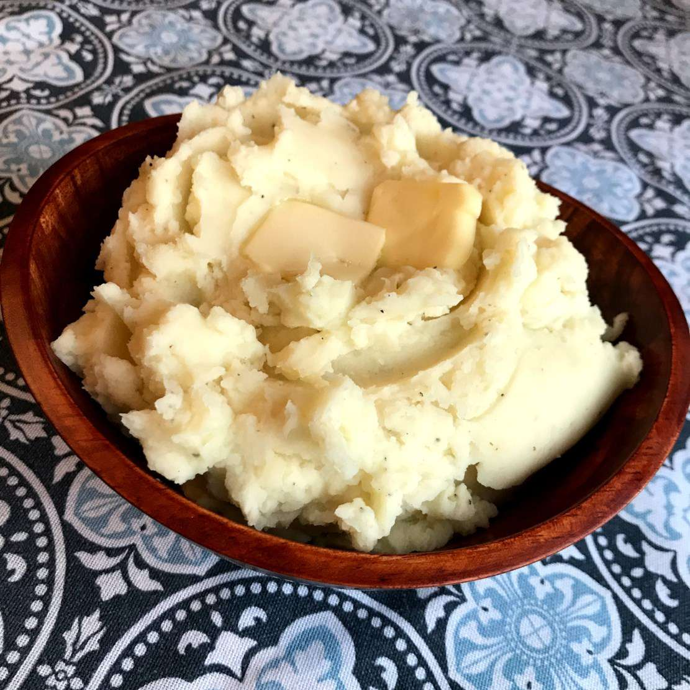

Back to Home
Perfect Mashed Potatoes

Description
This mashed potatoes recipe will give you the proper technique to make perfect mashed potatoes every time — buttery, fluffy, and lump-free for the ultimate comfort food!
Ingridients
- 3 large russet potatoes, peeled and cut in half lengthwise
- ½ cup whole milk
- ¼ cup butter
- salt and ground black pepper to taste
Directions
- Step 1
Place potatoes in a large pot and cover with salted water. Bring to a boil. Reduce heat to medium-low, cover, and simmer until tender, 20 to 25 minutes.
- Step 2
Drain potatoes, then return to the pot. Turn heat to high and allow potatoes to dry for about 30 seconds. Turn off heat.
- Step 3
Mash potatoes with a potato masher twice around the pot, then add milk and butter. Continue to mash until smooth and fluffy. Whisk in salt and black pepper until evenly distributed, about 15 seconds.